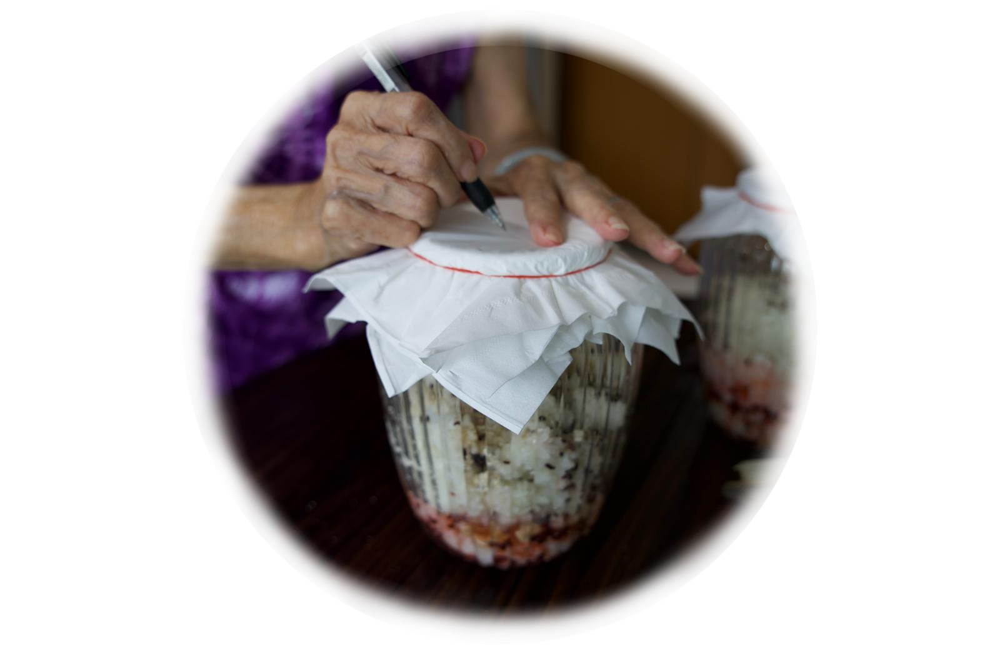
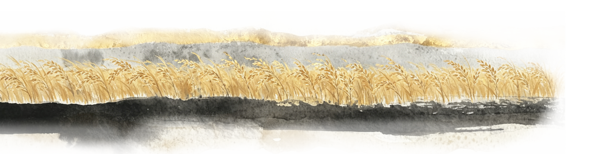
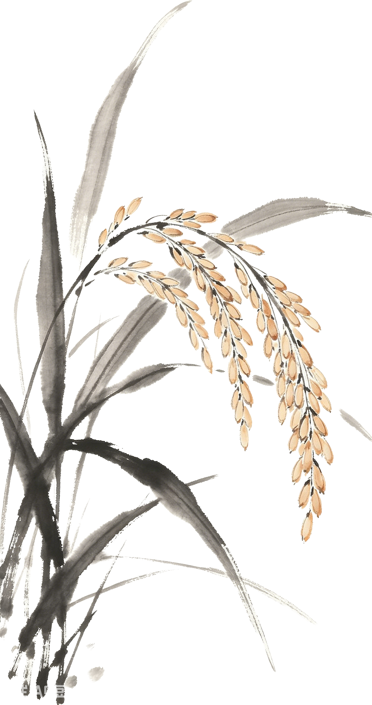
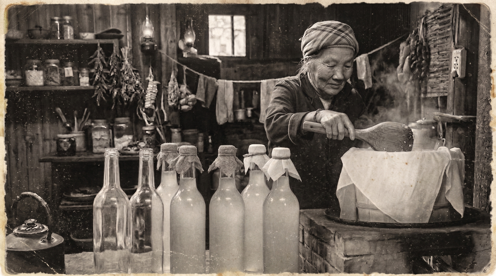
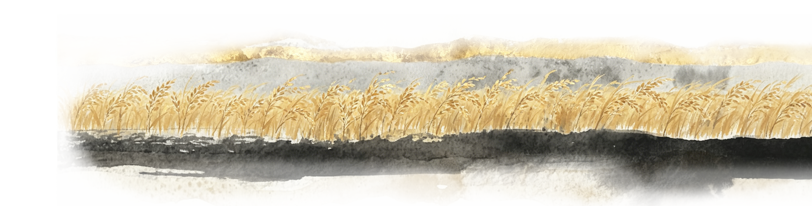
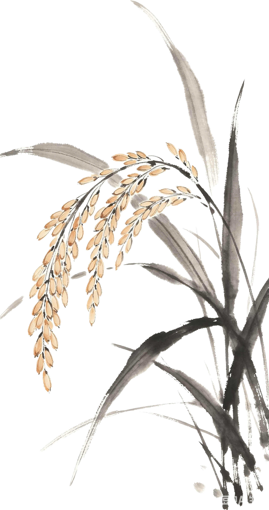
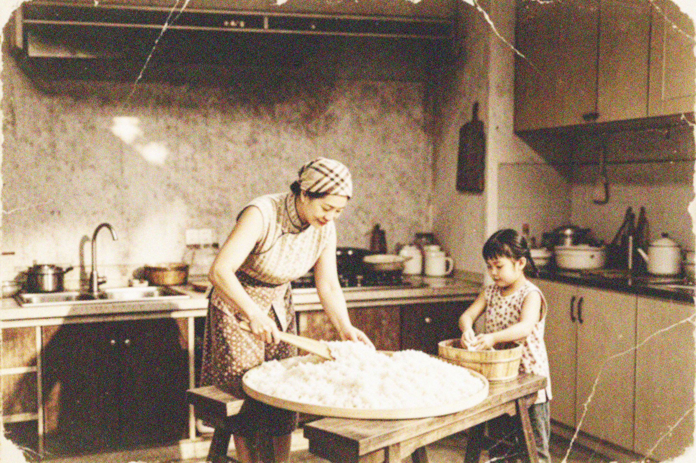
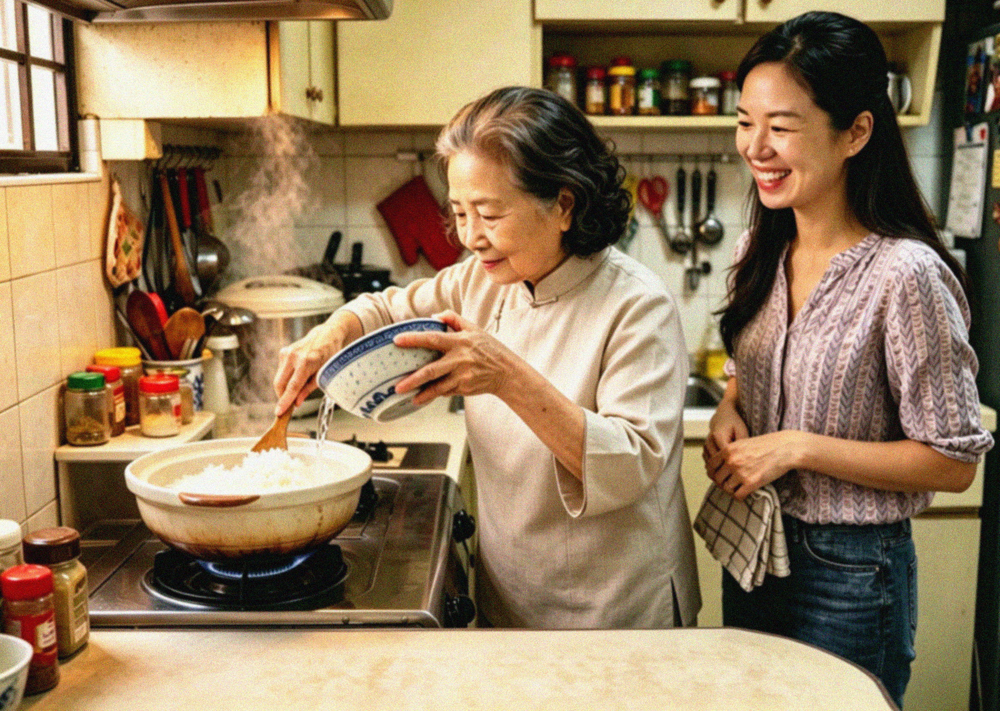
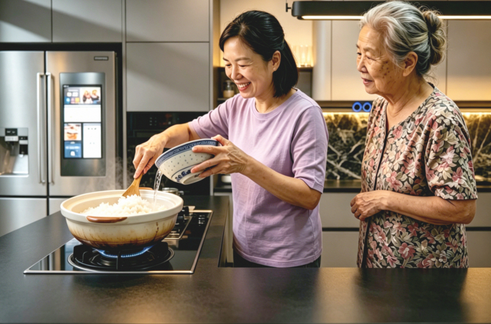
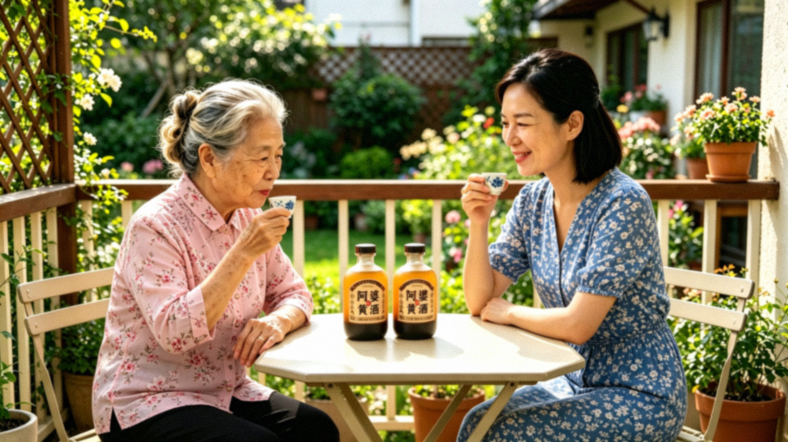

Our Hakka Yellow Wine (Huangjiu) is not merely a commercial product; it is a living piece of culinary history, a powerful wellness tonic, and a beautiful testament to a family’s dedication to cultural heritage.
While our traditional craft shares the ancient, warming medicinal principles found in the classic Chinese medical text, the Shang Han Lun, our direct family recipe follows a personal, generation-spanning journey through time. Explore how this liquid gold travelled from a grandmother's kitchen into the modern digital age.









Are you ready to taste the profound difference that time, patience, and small-batch craftsmanship make? Whether you are a returning customer restocking your essential pantry, a new mother entering confinement, or a curious cook discovering traditional Huangjiu for the very first time, a bottle of liquid gold is waiting for you.